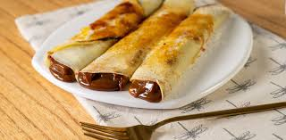

Panqueques

Description
Perfect pancakes are easier to make than you think.
This pancake recipe produces thick, fluffy, and all-around delicious pancakes with just a few ingredients that are probably already in your kitchen (and it's so much better than the boxed stuff).
Ingredients
- Flour
- Baking powder
- Sugar
- Salt
- Milk and butter
- Egg
Steps
- Sift the dry ingredients together.
- Make a well, then add the wet ingredients. Stir to combine.
- Scoop the batter onto a hot griddle or pan.
- Cook for two to three minutes, then flip.
- Continue cooking until brown on both sides.